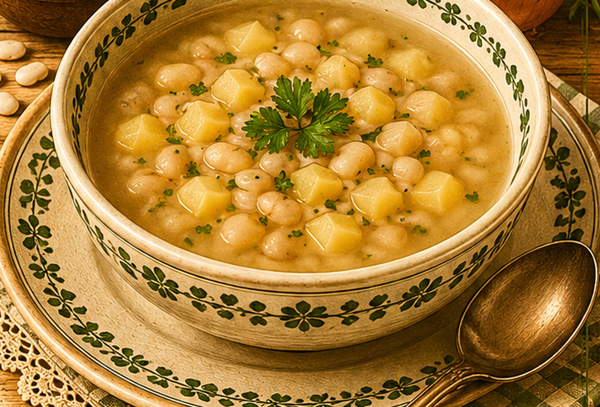

Bohnensuppe ohne Fleisch
Eine fleischlose Bohnensuppe mit Kartoffeln, Zwiebel und einer kleinen Mehlschwitze.

Originale Überlieferung
Weiße Bohnen werden eingeweicht und am folgenden Tag in frischem Wasser weich gekocht. Kartoffeln kommen hinzu. Eine Einbrenne aus Fett, Zwiebel und Mehl wird mit Suppe verrührt und wieder in den Topf gegeben.
Moderne Übertragung
Die eingeweichten Bohnen garen mit Kartoffeln weich. Eine Zwiebel-Mehlschwitze sorgt für Bindung und herzhaften Geschmack.
Zutaten
- 150 g getrocknete weiße Bohnen
- 1,5 l Wasser
- 2 Kartoffeln
- 1 Zwiebel
- 1 EL Fett
- 1 EL Mehl
- Salz
- etwas Petersilie
Zubereitung
- Bohnen über Nacht in kaltem Wasser einweichen.
- Am nächsten Tag abgießen, mit frischem Wasser aufsetzen und weich kochen.
- Kartoffeln würfeln und während der letzten 25 bis 30 Minuten mitgaren.
- Zwiebel in Fett glasig dünsten, Mehl einrühren und kurz anschwitzen.
- Mit etwas Suppe glatt rühren, zurück in den Topf geben, salzen und mit Petersilie servieren.